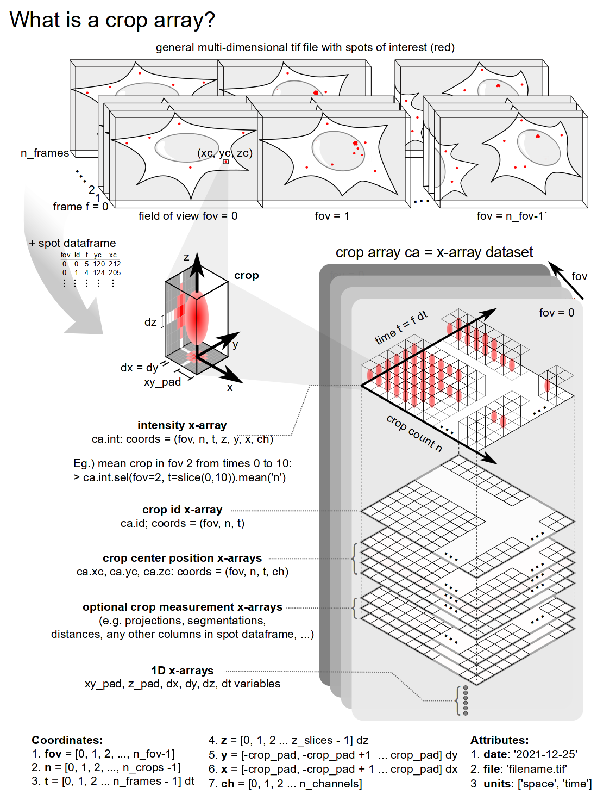

croparray: Module Guide
{kind=link}
Python code to create, manipulate, and analyze an array of crops from TIF images or videos. Created: Summer of 2020 Authors: Tim Stasevich.
- src.crop_array_tools.create_crop_array(video, df, **kwargs)
Creates a crop x-array from a tif video and a dataframe containing the ids and coordinates of spots of interest. Cropping is only performed in the lateral xy-plane (so each crop has all z-slices in the video). Padding in the xy-plane by zeros is added to create crops for spots that are too close to the edge of the video.
- Parameters
video (numpy array) – A 6D numpy array with intensity information from a tif video. The dimensions of the numpy array must be ordered (fov, f, z, y, x, ch), where fov = field of view, f = frame, z = axial z-coordinate, y = lateral y-coordinate, x = lateral x-coordinate, and ch = channels. Note any dimension can have length one (eg. single fov videos would have an fov dimension of length one or a single channel video would have a ch dimension of length one).
df (pandas dataframe) – A dataframe with the ids and coordinates of selected spots for making crops from video. Minimally, the dataframe must have 5 columns (1) ‘fov’: the fov number for each spot; can also be a filename for each fov. (2) ‘id’: the integer id of each spot. (3) ‘f’: integer frame number of each spot. (4) ‘yc’: the lateral y-coordinate of the spot for centering the crop in y, (5) ‘xc’: the lateral x-coodinate of the spot for centering the crop in x. Any additional columns must be numeric and will be automatically converted to individual x-arrays in the crop array dataset that have the column header as a name.
xy_pad (int, optional) – The amount of pixels to pad the centered pixel for each crop in the lateral x and y directions. Note the centered pixel is defined as the pixel containing the coordinates (xc, yc, zc) for each crop. As an example, if xy_pad = 5, then each crop in the crop array will have x and y dimensions of 11 = 2*xy_pad + 1.
dz (int, optional) – The size of pixels in the x-direction.
dy (int, optional) – The size of pixels in the y-direction.
dz – The size of pixels in the z-direction.
dt (int, optional) – The time between sequential frames in the video.
video_filename (str, optional) – The name of the tif video file.
video_date (str, optional) – The date the video was acquired, in the form ‘yyyy-mm-dd’.
homography (numpy array, optional) – A 3x3 transformation matrix that corrects for the misalignment of channel 0 to the other channels in the video.
- Returns
A crop x-array dataset ca (i.e. crop array) containing 9 default x-arrays (+ optional x-arrays based on optional inputted df columns).
Coordinates of x-array dataset (fov, n, t, z, y, x, ch) – fov = [0, 1, … n_fov] n = [0, 1, … n_crops] t = [0, 1, … n_frames] dt z = [0, 1, … z_slices] dz y = [-xy_pad, xy_pad + 1, … xy_pad] dy x = [-xy_pad, xy_pad + 1, … xy_pad] dx ch = [0, 1, … n_channels]
Attributes of dataset (filename, date)
X-arrays in dataset
1. ca.int – coords ((fov, n, t, z, y, x ch); attributes: ‘units’; uint16) – An X-array containing the intensities of all crops in the crop array.
2. ca.id – coords ((fov, n, t); attributes: ‘units’; uint16) – An x-array containing the ids of the crops in the video.
3. ca.yc – coords ((fov, n, t, ch); attributes: ‘units’; uint16) – An x-array containing the yc coordinates of the crops in the video.
4. ca.xc – coords ((fov, n, t, ch); attributes: ‘units’; uint16) – An x-array containing the zc coordinates of the crops in the video.
5. ca.xy_pad – coords ((fov, n, t, ch); attributes: ‘units’; uint16) – A 1D array containing xy-pad.
6. ca.dt – coords ((fov, n, t, ch); attributes: ‘units’; float) – A 1D arary containing dt.
7. ca.dz – coords ((fov, n, t, ch), float) – A 1D arary containing dz.
9. ca.dy – coords ((fov, n, t, ch), float) – A 1D arary containing dy.
9. ca.dx – coords ((fov, n, t, ch), float) – A 1D arary containing dx.